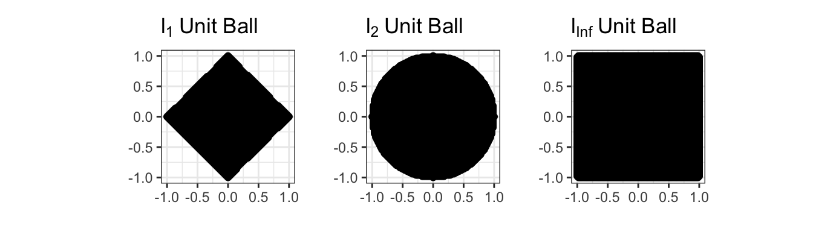
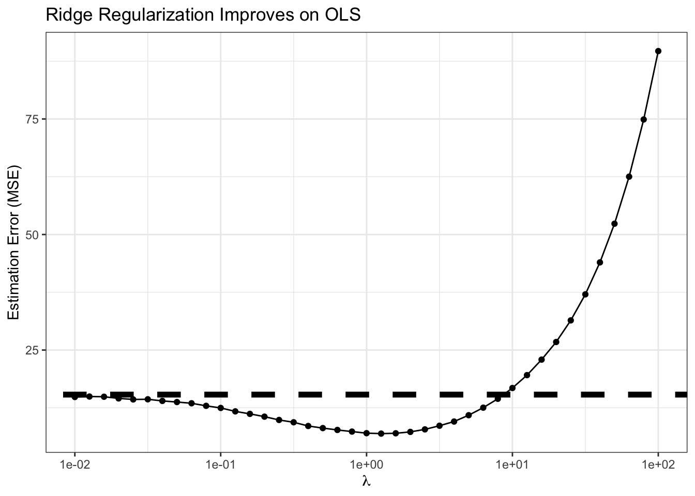
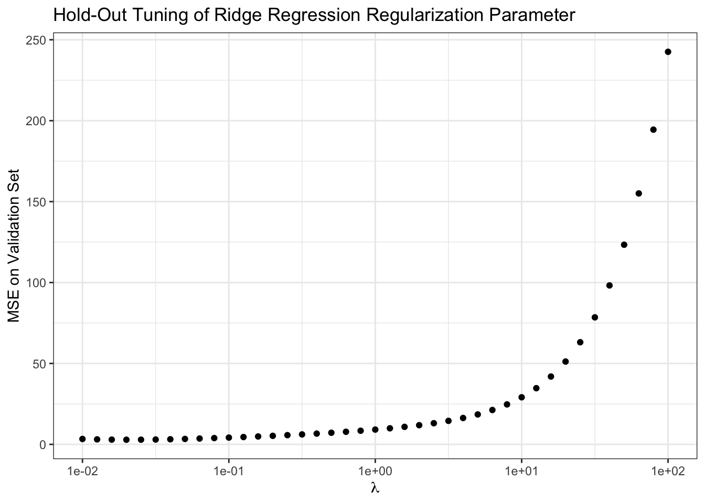
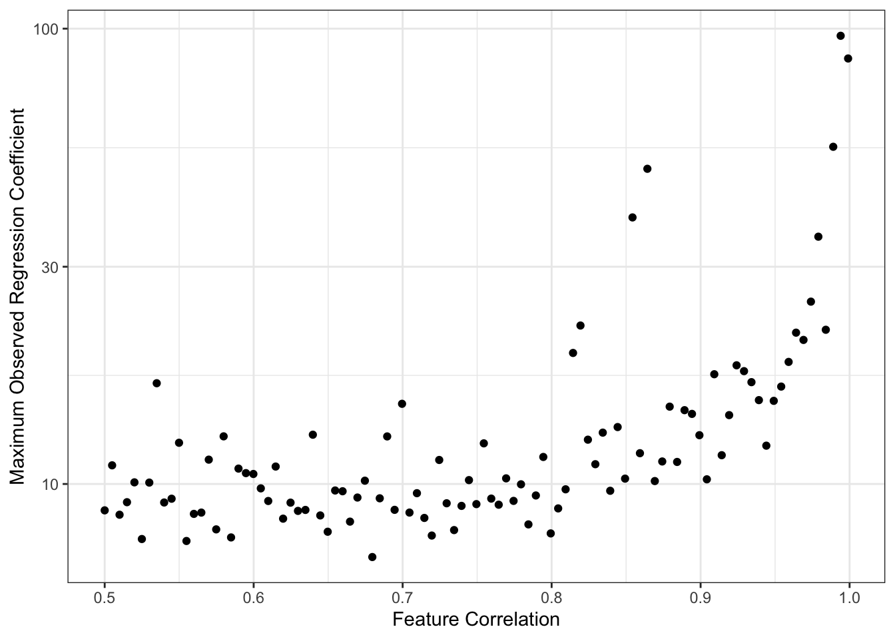

STA 9890 - Supervised Learning: II. Penalized Regression
\[\newcommand{\E}{\mathbb{E}} \newcommand{\R}{\mathbb{R}} \newcommand{\bx}{\mathbf{x}}\newcommand{\bbeta}{\mathbf{\beta}} \newcommand{\bX}{\mathbf{X}} \newcommand{\by}{\mathbf{y}} \newcommand{\bz}{\mathbf{z}} \newcommand{\bA}{\mathbf{A}} \newcommand{\bb}{\mathbf{b}} \newcommand{\bc}{\mathbf{c}} \newcommand{\bH}{\mathbf{H}} \newcommand{\bI}{\mathbf{I}} \newcommand{\V}{\mathbb{V}} \newcommand{\argmin}{\text{arg min}} \newcommand{\K}{\mathbb{K}} \newcommand{\bzero}{\mathbf{0}}\]
Ridge Regression
In the previous set of notes, we saw that \((\overline{X}_n)_{[-\beta, \beta]}\) could outperform the naive estimator \(\overline{X}_n\) if the true parameter is ‘not too big’.
Can we extend this idea to regression?
Recall that we formulated OLS as:
\[\hat{\bbeta}_{\text{OLS}} = \argmin_{\bbeta \in \R} \frac{1}{2}\|\by - \bX\bbeta\|\]
We can apply a ‘clamp’ as:
\[\hat{\bbeta}_{\tau-\text{Clamped}} = \argmin_{\bbeta \in \R: \|\bbeta\| < \tau} \frac{1}{2}\|\by - \bX\bbeta\| = \argmin_{\bbeta \in \R} \frac{1}{2}\|\by - \bX\bbeta\| \text{ such that } \|\bbeta\| \leq {\tau}\]
Here, we have some choice in measuring the ‘size’ of \(\hat{\bbeta}\): in fact, we can theoretically use any of our \(\ell_p\)-norms. As with the squared loss, it turns out to be mathematically easiest to start with the \(\ell_2\) (Euclidean) norm. This gives us the so-called ridge regression problem:
\[\hat{\bbeta}_{\text{Ridge}} = \argmin_{\bbeta \in \R} \frac{1}{2}\|\by - \bX\bbeta\| \text{ such that } \|\bbeta\|_2 \leq {\tau} = \argmin_{\bbeta \in \R} \frac{1}{2}\|\by - \bX\bbeta\| \text{ such that } \|\bbeta\|_2^2 \leq {\tau}^2\]
Before we discuss solving this, let’s confirm it is convex. Recall that for a problem to be convex, it needs to have a convex objective and a convex feasible set. Clearly the objective here is convex - we still have the MSE loss from OLS unchanged. So now we need to convince ourselves that \(\|\bbeta\|_2^2 \leq \tau^2\) defines a convex set. We can look at this in 2D first:
\[\|\bbeta\|_2^2 \leq \tau^2 \implies \beta_1^2 + \beta_2^2 \leq \tau\]
But this is just the equation defining a circle and its interior (in math speak a 2D ‘ball’) so it has to be convex!
In fact, constraints of the form
\[\|\bbeta\|_p \leq \tau \Leftrightarrow \|\bbeta\|_p^2 \leq \tau^p\]
are convex for all \(\ell_p\) norms (\(p \geq 1\)). We will use this fact many times in this course. The sets that this constraint defines are called \(\ell_p\) ‘balls’ by analogy with the \(\ell_2\) figure, even if they aren’t actually round.
So our ridge problem
\[\hat{\bbeta}_{\text{Ridge}} = \argmin_{\bbeta \in \R} \frac{1}{2}\|\by - \bX\bbeta\| \text{ such that } \|\bbeta\|_2^2 \leq {\tau}^2\] is indeed convex.
While we can solve this without too much trouble (though we need to adjust our basic gradient descent method to avoid going ‘out of bounds’), it turns out to be easier to use an optimization trick known as Lagrange Multipliers to change this to something easier to solve.
The Method of Lagrange Multipliers lets us turn constrained optimization problems that look like:
\[\argmin_x f(x) \text{ such that } g(x) \leq \tau\]
into unconstrained problems like:
\[\argmin_x f(x) + \lambda g(x)\]
Here, the constant \(\lambda\) is known as the Lagrange multiplier. Instead of forcing \(g(x)\) to be bounded, we simply penalize any \(x\) that makes \(g(\cdot)\) large. For large enough penalties (large \(\lambda\)), we will eventually force \(g(x)\) to be small enough that we satisfy the original constraint. In fact, there is a one-to-one relationship between \(\tau\) and \(\lambda\), but it’s usually not possible to work it out in any meaningful useful manner; all we can say is that larger \(\lambda\) correspond to smaller \(\tau\).
Pause to Reflect
Why is this true? Why does small \(\tau\) imply large \(\lambda\) and vice versa?
In this form, it’s straightforward to pose ridge regression as:
\[\argmin_{\beta} \frac{1}{2}\|\by - \bX\bbeta\|_2^2 + \frac{\lambda}{2}\|\bbeta\|_2^2\]
Pause to Reflect
Why were we allowed to put an extra \(\frac{1}{2}\) in front of the penalty term?
Since both terms of this expression are differentiable, it is easy to show that the solution to this problem is given by:
\[\hat{\bbeta}_{\lambda} = (\bX^{\top}\bX + \lambda \bI)^{-1}\bX^{\top}\by\]
To wit:
\[\begin{align*} \bzero &= \frac{\partial}{\partial \bbeta}\left(\frac{1}{2}\|\by - \bX\bbeta\|_2^2 + \frac{\lambda}{2}\|\bbeta\|_2^2\right) \\ &= -\bX^{\top}(\by - \bX\bbeta) + \lambda \bbeta \\ \bX^{\top}\by &= (\bX^{\top}\bX + \lambda \bI)\bbeta \\ \implies \hat{\beta}_{\text{Ridge}} &= (\bX^{\top}\bX + \lambda \bI)^{-1}\bX^{\top}\by \end{align*}\]
There are several important things to note about this expression:
There are actually many ridge regression solutions, one for each value of \(\lambda\). It is a bit improper to refer to “the” ridge regression solution. We will discuss selecting \(\lambda\) below.
-
If you are a bit sloppy, this looks something like:
\[\hat{\beta} \approx \frac{SS_{XY}}{SS_{XX} + \lambda}\]
so we ‘shrink’ the standard OLS solution towards zero, by an amount depending on \(\lambda\). Higher \(\lambda\)
-
The penalized form (as opposed to the constraint form) allows for \(\hat{\beta}\) to be arbitrarily large, if the data supports it.
More than that, \(\lambda\) gives us an explicit trade-off. When comparing two potential solutions (\(\hat{\bbeta}_1, \hat{\bbeta}_2\)), we will prefer \(\hat{\bbeta}_1\) if:
\[\begin{align*} \frac{1}{2}\|\by - \bX\bbeta_1\|_2^2 + \frac{\lambda}{2}\|\bbeta_1\|_2^2 & \leq \frac{1}{2}\|\by - \bX\bbeta_2\|_2^2 + \frac{\lambda}{2}\|\bbeta_2\|_2^2 \\ \|\by - \bX\bbeta_1\|_2^2 - \|\by - \bX\bbeta_2\|_2^2 & \leq \lambda(\|\bbeta_2\|_2^2 - \|\bbeta_1\|_2^2) \\ \Delta \text{MSE} &\leq \lambda \Delta \text{$\ell_2^2$-Norm} \end{align*}\]
That is, we will take a solution with a MSE that is \(\lambda\) lower if that lowers the squared-norm of the solution by 1. Here \(\lambda\) measures the “price” we are willing to pay (in terms of MSE) for shrinking the norm of \(\hat{\bbeta}\): at larger \(\lambda\), we demand a larger MSE reduction ceteribus paribus to accept a larger \(\hat{\bbeta}\), while at small \(\lambda\), we are willing to take a larger \(\hat{\bbeta}\) in exchange for a much smaller decrease in MSE.
If we set \(\lambda = 0\), we recover standard OLS. Continuing the ‘price’ discussion above, this is the limit in which we will take a larger \(\hat{\bbeta}\) for any decrease in training MSE. This makes sense as we originally built OLS as the ERM for MSE, by definition caring about only MSE reduction and nothing else.
Unlike the OLS solution, the ridge regression exists even when \(p > n\) because the \(+\lambda \bI\) term ensures the ‘denominator’ prefactor is always invertible.
While this isn’t as simple to analyze as some of the expressions we considered above, this looks similar enough to our ‘shrunk’ mean estimator that it’s plausible it will improve on OLS. In fact, you can show that there is always some value of \(\lambda\) that guarantees improvement over OLS in expectation. (This is a result known as the “MSE Existence Theorem”)
To wit,
n <- 100
p <- 80
Z <- matrix(rnorm(n * p), nrow=n)
L <- chol(toeplitz(0.6^(1:p))) # Add 'AR(1)' correlation
X <- Z %*% L
beta <- runif(p, 2, 3)
eye <- function(n) diag(1, n, n)
calculate_ridge_mse <- function(lambda, nreps = 1000){
MSE <- mean(replicate(nreps, {
y <- X %*% beta + rnorm(n, sd=1)
beta_hat <- solve(crossprod(X) + lambda * eye(p), crossprod(X, y))
sum((beta - beta_hat)^2)
}))
data.frame(lambda=lambda, MSE=MSE)
}
lambda_grid <- 10^(seq(-2, 2, length.out=41))
RIDGE_MSE <- map(lambda_grid, calculate_ridge_mse) |> list_rbind()
OLS_MSE <- calculate_ridge_mse(0)$MSE # Ridge at lambda = 0 => OLS
ggplot(RIDGE_MSE, aes(x=lambda, y=MSE)) +
geom_point() +
geom_line() +
geom_abline(intercept=OLS_MSE, slope=0, lwd=2, lty=2) +
xlab(expression(lambda)) +
ylab("Estimation Error (MSE)") +
ggtitle("Ridge Regularization Improves on OLS") +
theme_bw() +
scale_x_log10()
Clearly, for smallish \(\lambda\), we are actually outperforming OLS, sometimes by a significant amount! For this problem, the minimum MSE (best estimate) actually seems to occur near \(\lambda \approx\) 1.259
Model Selection
While theory and our experiment above tell us that there is some value of \(\lambda\) that beats OLS, how can we actually find it? We can’t do a simulation like above as we had to know \(\bbeta_*\) to compute the MSE and the theory is non-constructive. (In particular, we have to know \(\bbeta_*\) to compute the bias.)
Well, we can go back to our overarching goal: we want results that generalize to unseen data. Here, in particular, we want results that predict well on unseen data. So let’s just do that.
We can split our data into a training set and a validation set. The training set is like we have already seen, used to estimate the regression coefficients \(\bbeta_{\text{Ridge}}\); the validation set may be new. It is used to compute the MSE on ‘pseudo-new’ data and we then can select the best predicting value of \(\lambda\). In this case, this looks something like the following:
# Continuing with X, beta from above
y <- X %*% beta + rnorm(n, sd = 1)
TRAIN_IX <- sample(n, 0.8 * n)
VALID_IX <- setdiff(seq(n), TRAIN_IX) # Other elements
TRAIN_X <- X[TRAIN_IX, ]
TRAIN_Y <- y[TRAIN_IX]
VALID_X <- X[VALID_IX, ]
VALID_Y <- y[VALID_IX]
compute_validation_error <- function(lambda){
beta_hat_rr <- solve(crossprod(TRAIN_X) + lambda * eye(p),
crossprod(TRAIN_X, TRAIN_Y))
y_pred <- VALID_X %*% beta_hat_rr
data.frame(lambda = lambda,
validation_mse = mean((y_pred - VALID_Y)^2))
}
validation_error <- map(lambda_grid, compute_validation_error) |> list_rbind()
ggplot(validation_error,
aes(x = lambda,
y = validation_mse)) +
geom_point() +
xlab(expression(lambda)) +
ylab("MSE on Validation Set") +
ggtitle("Hold-Out Tuning of Ridge Regression Regularization Parameter") +
theme_bw() +
scale_x_log10()
Our results here aren’t quite as definitive as when we knew the true \(\bbeta_*\), but they suggest we want to take \(\lambda \approx\) 0.02 which isn’t too far from what we found above.
Pause to Reflect
Does this procedure give an unbiased estimate of the true test error? Why or why not?
There are some limitations to this basic procedure - randomness and (arguably) inefficient data usage - that we will address later, but this gets us started.
Lasso Regression
Ridge regression is a rather remarkable solution to the problem of ‘inflated’ regression coefficients. But let’s remind ourselves why we find inflated coefficients in the first place.
A common cause of overly large regression coefficients is correlation among the columns of \(\bX\). For example,
max_beta_sim <- function(rho, n, p){
R <- replicate(100, {
Z <- matrix(rnorm(n * p), nrow=n)
L <- chol(toeplitz(rho^(1:p)))
X <- Z %*% L
beta <- runif(p, 2, 3)
y <- X %*% beta + rnorm(n)
beta_hat <- coef(lm(y ~ X))
max(abs(beta_hat))
})
data.frame(beta_max = max(R),
n = n,
p = p,
rho = rho)
}
RHO_GRID <- seq(0.5, 0.999, length.out=101)
BETAS <- map(RHO_GRID, max_beta_sim, n = 40, p = 35) |> list_rbind()
ggplot(BETAS,
aes(x = rho,
y = beta_max))+
geom_point() +
scale_y_log10() +
theme_bw() +
xlab("Feature Correlation") +
ylab("Maximum Observed Regression Coefficient") +
geom_abline(intercept = 3, color="red4", lwd=2, lty=2)
This simulation is maybe a bit unfair to OLS since we are taking maxima instead of averages or similar, but the message is certainly clear. As the columns of \(\bX\) become highly correlated, we get larger values of \(\hat{\beta}\). Because OLS is unbiased here, this is fundamentally a story of variance: as we have more features,
\[\V[\hat{\beta}] \propto (\bX^{\top}\bX)^{-1}\]
increases, making it likely that we see increasingly wild values of \(\hat{\beta}\). (Recall that we generated our data so that \(\beta_*\) was never larger than 3, as noted in red above.)
Why does this happen? It’s maybe a bit tricky to explain, but with highly correlated features the model can’t really distinguish them well, so it ‘overreacts’ to noise and produces very large swings (variance) in response to small changes in the training data. Like above, we can hope to tame some of this variance if we take on a bit of bias.
Another way we might want to ‘calm things down’ and improve on OLS is by having fewer features in our model. This reduces the chance of ‘accidental correlation’ (more features leads to more ‘just because’ correlations) and gives us a more interpretable model overall. (More about interpretability below)
Best Subsets
You have likely already seen some sort of ‘variable selection’ procedures in prior courses: things like forward stepwise, backwards stepwise, or even hybrid stepwise. All of these are trying to get at the idea of only including variables that are ‘worth it’; in other settings, you may also see them used as finding the ‘most valuable’ variables. Let’s use our newfound knowledge of optimization to formalize this.
The best-subsets problem is defined by:
\[\argmin_{\beta} \frac{1}{2}\|\by - \bX\bbeta\|_2^2 \text{ such that } \|\bbeta\|_0 \leq k\]
This looks similar to our ridge regression problem, but now we’ve replaced the \(\ell_2\)-norm constraint with the \(\ell_0\)-‘norm’. Recall that the \(\ell_0\)-‘norm’ is the number of non-zero elements in \(\bbeta\) and that it’s not a real norm. So this says, find the minimum MSE \(\beta\) with at most \(k\) non-zero elements. Since more features always reduces (or at least never increases) training MSE, we can assume that this problem will essentially always pick the best combination of \(k\) variables.
Alternatively, in penalized form, we might write:
\[\argmin_{\beta} \|\by - \bX\bbeta\|_2^2 + \lambda \|\bbeta\|_0\]
Here, we only introduce a new variable if including it lowers our training MSE by \(\lambda\): we’ve implicitly set \(\lambda\) as our ‘worth it’ threshold for variables.
Note that these problems require finding the best combination of variables. The most individually useful variables might not be useful in combination: e.g., someone’s right shoe size might be very useful for predicting their height, and their left shoe size might be very useful for predicting their height, and their gender might be a little bit useful for predicting their height, but you’ll do better with right shoe and gender than with right and left shoe.
Because we’re checking all combinations of variables, this is a so-called ‘combinatorial’ optimization problem. These are generally quite hard to solve and require specialized algorithms (unlike our general purpose convex optimization algorithms). A naive approach of ‘try all models’ becomes impractical quickly. If we have \(p=30\) potential features, that’s \(2^{30}\), or just over a billion, possible models we would need to check. Even if we can check one model every minute, that takes about 2040 years to check them all; if we have a computer do the work for us and it’s faster, say 1000 models per minute, we still need over 2 years. And that’s just for 30 features! In realistic problems where \(p\) can be in the hundreds or thousands, we have no chance.
Thankfully, smart people have worked on this problem for us and found that for \(p \approx 100 - 1000\), very fancy software can solve this problem.1 But that still leaves us very far we want to go…
Algorithmic Approximations
Convex Approximations
The Lasso
The Value of Sparsity
Algorithms
glmnet
Model Selection
TODO
Footnotes
“Best subset selection via a modern optimization lens” by Dimitris Bertsimas, Angela King, Rahul Mazumder Annals of Statististics 44(2): 813-852 (April 2016). DOI: 10.1214/15-AOS1388↩︎